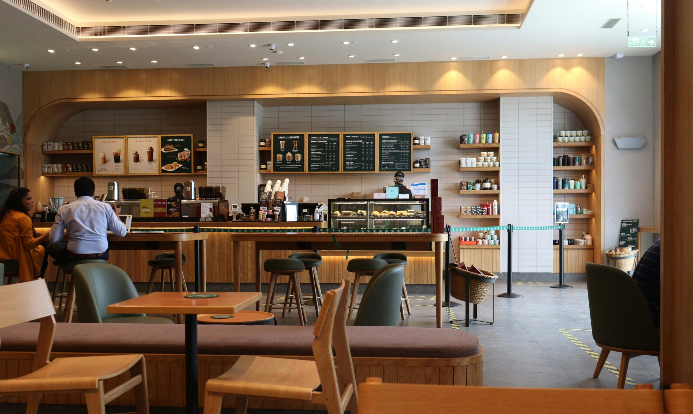
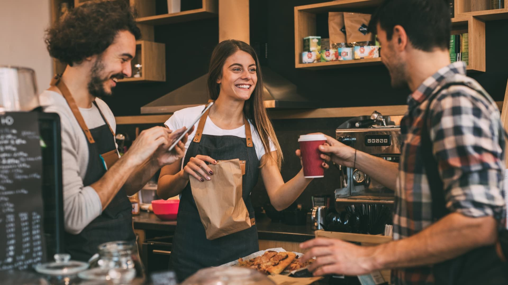

El amor por el café
Disfrutamos de esos pequeños rituales que convierten una taza de café en una experiencia.
Más que café: un lugar para disfrutar, compartir y crear buenos momentos.

En MyCafé creemos que los pequeños momentos pueden convertirse en grandes recuerdos. Una taza de café, algo dulce para acompañar y una buena conversación pueden hacer que cualquier día sea especial.
Por eso, buscamos crear un espacio acogedor donde cada persona pueda hacer una pausa, reunirse con quienes quiere o simplemente disfrutar de un momento para sí misma.
Tres ingredientes que hacen especial cada visita.
Disfrutamos de esos pequeños rituales que convierten una taza de café en una experiencia.
Nuestra propuesta de pastelería acompaña esos antojos que hacen un poco más dulce el día.
Queremos que cada visita sea una oportunidad para conversar, descansar y disfrutar.

Ya sea para comenzar la mañana, hacer una pausa durante el día o encontrarte con alguien especial, queremos que MyCafé sea ese lugar al que te guste regresar.
Porque, al final, no se trata solamente de lo que hay en la taza, sino también de todo lo que sucede alrededor de ella.
Descubre nuestro menú →